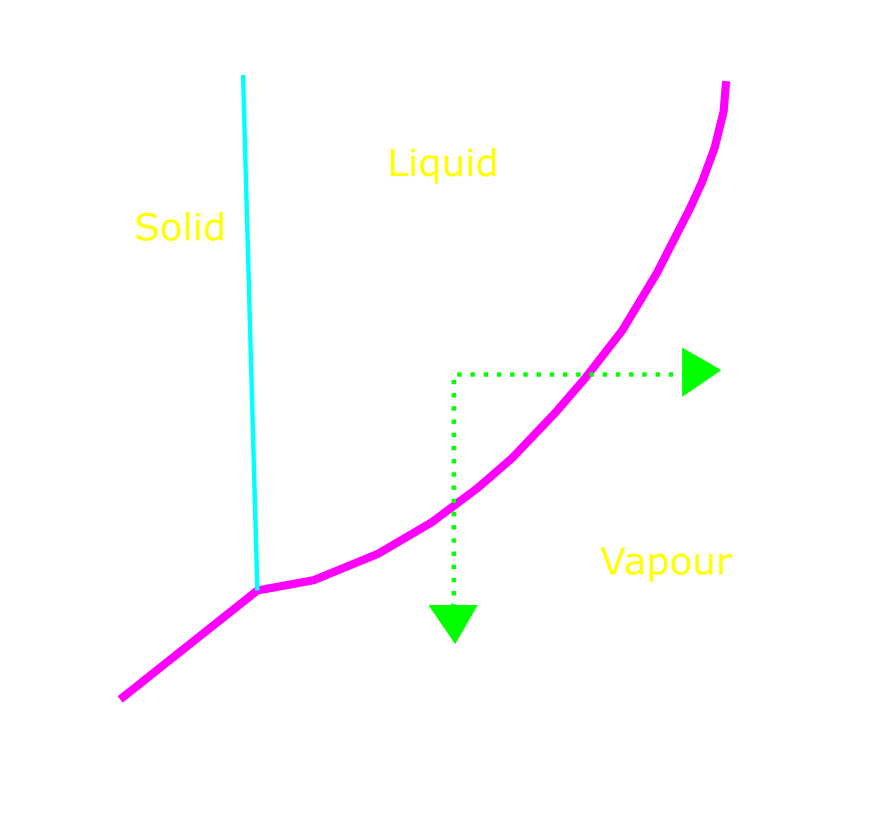

Hydrodynamics III:
Continuity, Venturis & Flow Meters
Dr Shane V Crowley
Press down for controls and right to progress
Interacting with the Slides
üì∫Full screen: press the F key
üéÆView video controls: hover cursor over video
üë©‚Äçüé® Draw: click icon or press C
üåàPen colour: press X to cycle and Y to revert
üíÅ Options and Info: click icon or press M
Links to video below:
üëâhttps://youtu.be/0XjticK77Wg
Click for print version (not recommended)üëà
Basic rule: No Accumulation
$$\color{yellow}{Q_1 = Q_2}$$
Simple enough, but remember that $\color{coral}{Q = v \cdot A}$Continuity Equation:
$$\color{yellow}{v_1 \cdot A_1} = \color{violet}{v_2 \cdot A_2}$$
Straightforward, but implications are non-obviousVelocity and Area
$\color{violet}{v_2} = \frac{\color{yellow}{v_1 \cdot A_1}}{\color{violet}{A_2}}$
For $flow_{in} = flow_{out}$, $v$ must increaseBernoulli's Equation
$$\color{yellow}{\frac{P_1}{\rho \cdot g} + \frac{v_1^2}{2 \cdot g} + z_1} = \color{violet}{\frac{P_2}{\rho \cdot g} + \frac{v_2^2}{2 \cdot g} + z_2}$$
If we assume that (1) $z_1 = z_2$ and (2) $v_2 >> v_1$ then this is easy to simplify...Simplified Form
$$\color{yellow}{\sqrt{\frac{2(P_1 - P_2)}{\rho}} = v_2}$$
When the velocity increases the pressure decreases ü§îSome practical consequences
- The pressure change can cause boiling
- Changes in $P$ and $v$ can be destructive
- Pressure can be used to measure flow-rate
Cavitation üç§ üî´ ü¶ê
Phase Transitions
Evidence of Cavitation
High velocities and cavitation effects can damage processing equipment but they can also be harnessed in a productive way.
❗
Cavitation bubbles can nucleate on pump rotors causing significant damage over time
✔️
Droplets or particles are accelerated towards a colliding surface and the drop in pressure that results can introduce cavitation effects
Venturi meter
Pitot Tube
First tube for static pressure, second tube for dynamic pressure and static pressurePitot tubes measure local velocity and are prone to blockage. Venturi meters and Pitot tubes are just a few of many different kinds of flow meter used in the food industry.
Next Lecture
Separations
shane.crowley@ucc.ie